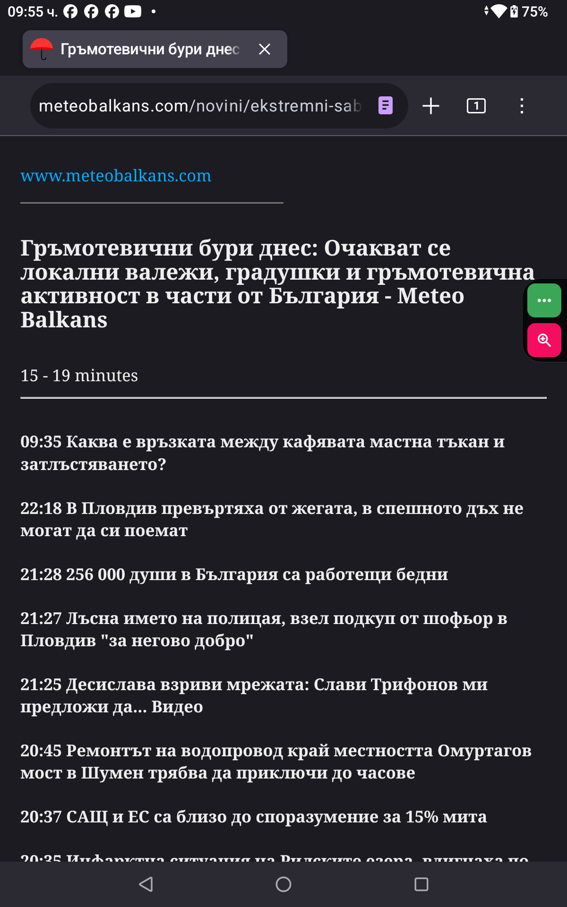
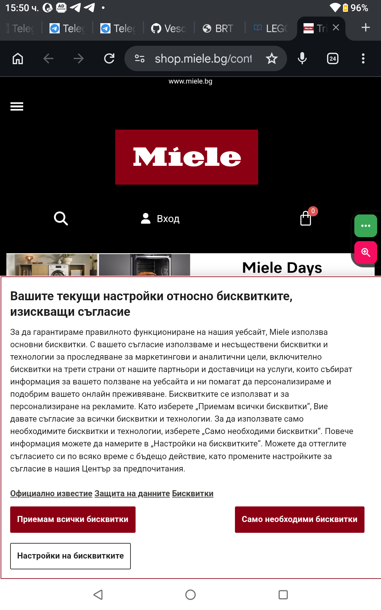
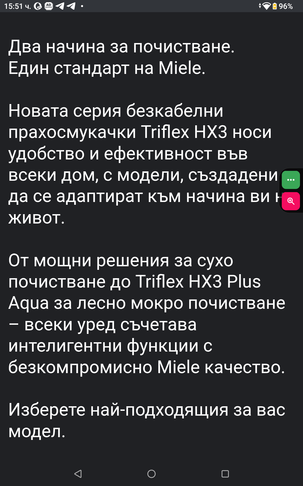
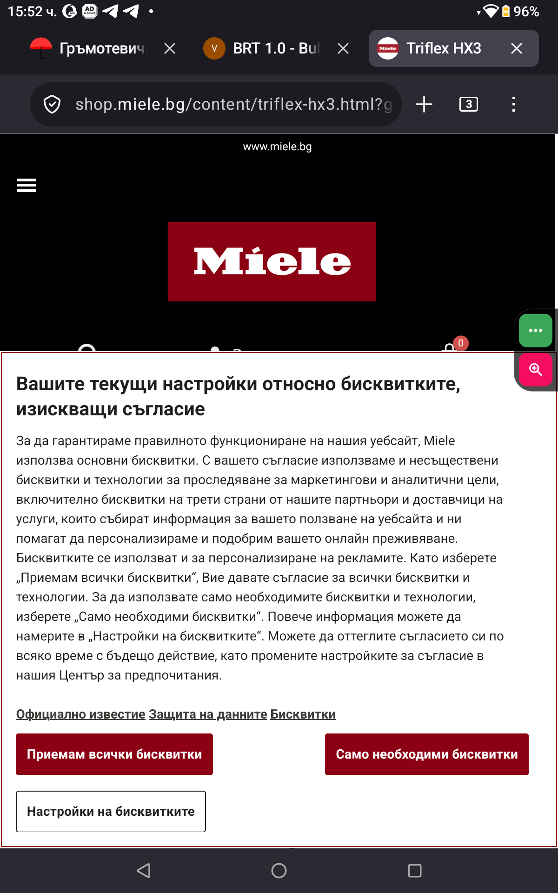

BRT - Browser Reader Mode Compatibility Test
1. Въведение
BRT (Browser Reader Mode Compatibility Test) е отворена неофициална методика за бърза проверка дали едно уеб съдържание може да бъде удобно прочетено чрез вградени функции за достъпност на съвременните браузъри.
Методиката е създадена с цел да помогне на потребители, тестери и разработчици да откриват пречки, които могат да затруднят достъпа до основната информация на една уеб страница.
BRT не оценява дизайна или качеството на съдържанието на даден сайт и не цели да критикува неговите създатели. Фокусът е върху това дали основното съдържание остава достъпно и удобно за четене.
2. Принципи
BRT проверява достъпността на основното съдържание, а не външния вид на сайта.
BRT не оценява дизайна на уебсайта, визуалното оформление или наличието на реклами.
Целта е да се провери дали потребителят може бързо и удобно да достигне до основната информация чрез функции за достъпност на браузъра.
Реклами, изскачащи прозорци, странични панели и други допълнителни елементи могат да затруднят четенето. BRT проверява как режимът за четене представя основното съдържание и дали то остава удобно за използване.
BRT не оценява съдържанието на статията, а само достъпността на нейното представяне чрез функциите за четене на браузъра.
3. Цел на методиката
Целта на BRT е да предостави лесен и разбираем начин за проверка на достъпността на уеб съдържание чрез вградените функции за достъпност на съвременните браузъри.
Методиката позволява на потребители без технически знания да установят дали основната информация на една уеб страница може да бъде прочетена удобно чрез режим за четене и други помощни настройки.
BRT не изисква специализиран софтуер или програмиране. Необходим е само браузър с налични функции за подобряване на четимостта.
Основната цел е да се откриват пречки, които могат да ограничат достъпа на потребителите до информацията в интернет.
4. Какво е режим на четене?
Режимът на четене (Reader Mode / Reader View) е функция на браузъра, която представя основното съдържание на уеб страницата в по-удобен за четене вид, като премахва или намалява разсейващи елементи като реклами, менюта и допълнителни блокове.
Тази функция може да се използва за по-лесно четене на статии и дълги текстове, както и за проверка на достъпността на уеб съдържанието чрез BRT.
4.1. Google Chrome
В Google Chrome режимът на четене може да бъде намерен чрез менюто с трите точки (⋮) в горната част на браузъра.
Изберете:
- Меню (⋮)
- Показване на режима на четене
4.2. Mozilla Firefox
В Mozilla Firefox режимът на четене се активира чрез правоъгълната икона в дясната част на адресната лента (URL полето), когато браузърът разпознае страницата като подходяща за четене.
Ако иконата не се показва, това не означава автоматично, че страницата е недостъпна. Firefox може да не разпознае съдържанието като подходящо за Reader View.
5. Необходими инструменти
BRT не изисква специален софтуер или технически знания. Необходимо е само устройство с интернет достъп и съвременен уеб браузър.
За извършване на тест са необходими:
- Компютър, таблет или смартфон.
- Уеб браузър с функция за режим на четене, когато е налична.
- Уеб страница, която ще бъде проверена.
Препоръчително е при записване на резултатите да се посочат:
- използваният браузър;
- версията на браузъра;
- датата на теста.
Тези данни помагат резултатите да бъдат проверими и сравними при бъдещи тестове.
6. Процедура за тестване
BRT се извършва чрез практическа проверка на уеб страницата с помощта на функциите за достъпност на браузъра.
Стъпка 1: Отваряне на страницата
Отворете уеб страницата, която желаете да проверите, в избран браузър.
Стъпка 2: Активиране на режим за четене
Включете режима за четене (Reader Mode / Reader View), ако браузърът го предлага.
Стъпка 3: Проверка на съдържанието
Проверете дали основната информация на страницата е налична и представена ясно. Обърнете внимание на:
- заглавие и основен текст;
- пълнота на съдържанието;
- четимост на текста;
- наличие на пречещи елементи.
Стъпка 4: Определяне на резултата
След проверката се определя резултат според критериите PASS, PARTIAL или FAIL.
7. Критерии за оценяване
BRT използва три нива за резултат от проверката на достъпността на основното съдържание. Резултатът се определя според това доколко информацията може да бъде прочетена чрез функциите за достъпност на браузъра.
🟢 PASS
Основното съдържание е достъпно и може да бъде прочетено удобно.
- Текстът се извлича правилно.
- Основната информация е налична.
- Структурата на съдържанието остава разбираема.
- Няма съществени пречки за четене.
🟠 PARTIAL
Съдържанието е частично достъпно, но има проблеми, които могат да затруднят потребителя.
- Липсват части от съдържанието.
- Някои елементи са представени неправилно.
- Четенето е възможно, но не е удобно.
🔴 FAIL
Основното съдържание не може да бъде използвано ефективно чрез режима за четене или други проверявани функции за достъпност.
- Не се извлича основният текст.
- Показва се несвързано съдържание.
- Информацията остава недостъпна за потребителя.
Резултатът се определя от достъпността на основното съдържание, а не от външния вид на уебсайта.
8. Примерен тест
8.1 Тестван уебсайт
Като пример за практическо приложение на BRT е използван уебсайтът Meteo Balkans.
Целта на теста е да се провери дали основното съдържание може да бъде достъпно чрез режим за четене в различни браузъри.
8.2 Използвани браузъри
- Google Chrome
- Mozilla Firefox
- Microsoft Edge
- Opera
8.3 Резултати
Google Chrome:
- Reader Mode: FAIL 🔴
- Заглавието на статията се извлича, но основното съдържание не е налично.

Mozilla Firefox:
- Reader View: FAIL 🔴
- Reader View се активира, но основното съдържание на статията не се показва.

Microsoft Edge:
- Тест №001 – Meteo Balkans
- Наблюдение:
AI асистентът на браузъра предостави опростена версия на съдържанието на статията, след като потребителят поиска режим на четене.
Резултат:
Това не е резултат от тест на Reader Mode / Reader View.
AI асистентът предостави алтернативен начин за представяне на съдържанието.
Връзка към подробно наблюдение: Test #001 - Browser Accessibility
8.4 Извод
Една и съща уеб страница може да даде различни резултати в различните браузъри. Поради това BRT разглежда всяка комбинация от браузър и уеб страница като отделен тестов случай.
8.5 Тест №2 – Miele
8.5.1 Тестван уебсайт
Уебсайт: Miele България
Целта на теста е да се провери дали основното съдържание може да бъде достъпно чрез режим за четене в различни браузъри.
8.5.2 Google Chrome
Нормален изглед:
docs/assets/images/Normal-view_Chrome_20260711-155253.png
Reader Mode:

- Резултат: PASS 🟢
- Основното съдържание се показва успешно.
8.5.3 Mozilla Firefox

- Резултат: FAIL 🔴
- Firefox не предлага Reader View за тази страница.
8.5.4 Извод
При този тест Google Chrome успешно предоставя Reader Mode и показва основното съдържание. Mozilla Firefox не предлага Reader View за същата страница.
Този пример показва, че една и съща уеб страница може да бъде обработена по различен начин от различните браузъри. Поради това BRT препоръчва проверката да се извършва с повече от един браузър.